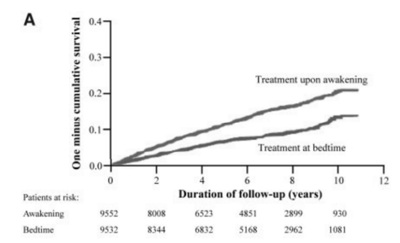
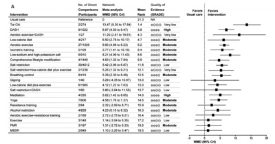
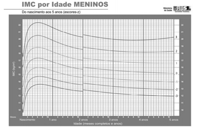
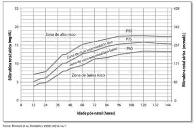
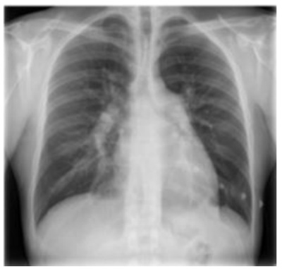
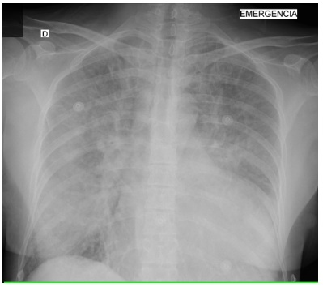
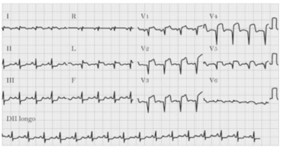
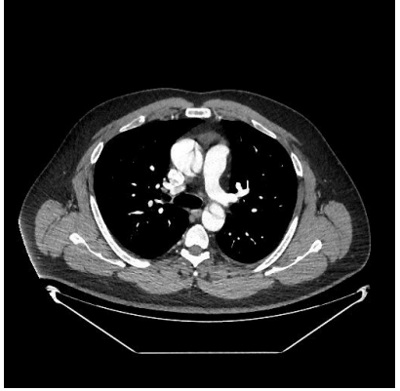
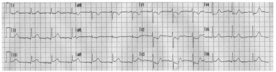

Alberto, de 69 anos de idade, caminhoneiro, hipertenso e diabético, foi à consulta, queixando-se dos medicamentos que tem de tomar. Refere estar com muitas dores nas pernas, principalmente à noite, quando toma sinvastatina. Seu risco cardiovascular é maior que 10%. Quando questionado sobre a adesão de suas medicações, Alberto a rmou que não vai mais tomar a sinvastatina. Com base nesse caso hipotético e nos três componentes da Medicina Baseada em Evidências, de David Sackett, suspender a sinvastatina seria uma conduta
Quanto à e cácia e à segurança da vacina Coronavac, foram apresentados dados clínicos pivotais, obtidos de um ensaio clínico fase 3, que demonstraram que até a data de corte de dados de 16 de dezembro de 2020 para a análise interina de e cácia, houve proteção conferida pela vacina Coronavac contra a covid-19, com e cácia de 50,39% a partir de quinze dias após a segunda dose, em participantes que receberam duas doses de vacina. Anvisa. Bases técnicas para a decisão do uso emergencial, em caráter experimental, de vacinas contra a covid-19, janeiro/2021 (com adaptações). Com relação ao texto acima, assinale a alternativa correta.
O estudo Hygia foi um ensaio clínico multicêntrico, prospectivo e aberto, que teve a intenção de avaliar o controle pressórico com o tratamento medicamentoso prescrito à noite versus o tratamento medicamentoso prescrito ao acordar. A imagem acima resume os resultados de um desfecho combinado de eventos cardiovasculares do ensaio clínico. Conforme esses dados, assinale a alternativa correta.

Segundo a meta-análise publicada no não farmacológicas que podem reduzir a pressão arterial. Na figura acima, há um forest plot evidenciando os resultados encontrados para a redução da pressão arterial sistólica (PAS). A partir desses resultados, assinale a alternativa correta.

João, homem cis de 28 anos de idade, foi atendido no acolhimento da demanda espontânea, dizendo estar com sinusite, por sentir dor na face e estar com secreção nasal clara. Durante a avaliação médica, Marcos, o médico de família, realizou o exame da transiluminação dos seios da face e o exame estava normal. Esse exame tem uma 0,55 (0,44 - 0,67). Com base nesse caso hipotético, é correto a rmar que, em relação à realização dessa manobra de exame físico,
Durante o atendimento da agenda programática na UBS, o médico de família recebeu Clara, uma mulher cis de 25 anos de idade, que está com palpitações no peito e dor torácica, principalmente à noite, há dois meses. Com base nesse caso hipotético, assinale a alternativa correta quanto à queixa inicial e ao valor preditivo positivo (VPP) para infarto agudo do miocárdio (IAM).
A enfermagem é potente e assume protagonismo no contexto da atenção primária à saúde. Considerando-se a atuação do enfermeiro nesse contexto, é correto afirmar que esse profissional pode
O título de organização social é um título jurídico concedido a uma entidade privada sem ns lucrativos que pode celebrar um contrato de gestão com o Estado para a administração de atividades públicas especiais. São entidades privadas sem fins lucrativos, o que significa que
Recentemente, o CONITEC emitiu o relatório de recomendações nº 599/2021 incorporando o implante subdérmico de etonogestrel na lista de medicamentos oferecidos pelo SUS para situações especiais. No município de São Paulo, o implante é oferecido desde 2016, quando o município fez a aquisição de mil unidades para indicações especiais. Ofertar esse medicamento antes da emissão do relatório do CONITEC só foi possível pelo princípio da:
O princípio do SUS que possibilita a maior parte da judicialização dos custos envolvidos na assistência à saúde é o da:
Ana foi à consulta de enfermagem com a intenção de discutir métodos contraceptivos. Ela tem dezesseis anos de idade, G0P0, enxaquecas com aura, ocasionalmente, e adenoma hepático descoberto em exame ocasional. Considerando, nesse caso hipotético, os critérios de elegibilidade para contraceptivos hormonais da OMS de 2015 e o índice de Pearl dos métodos contraceptivos, o melhor método para Ana seria o(a)
A Saúde Mental no Brasil A redução de danos é uma ferramenta que pode ser utilizada em diversos problemas de saúde. Um exemplo de caso onde foi usada a redução de danos é o(a)
João, homem trans de quarenta anos de idade, foi à consulta de acompanhamento de hormonização, na UBS, com seu médico de família. Entre os temas tratados na consulta, o médico abordou os rastreamentos populacionais para ele. Com base nesse caso hipotético e no que determina o Ministério da Saúde, o rastreamento mais apropriado, considerando-se que João esteja sem sintomas na consulta e não possua antecedentes familiares de neoplasias, seria
Giovanna, uma criança com nove meses de vida, que frequenta a creche, foi levada ao acolhimento da UBS, para consulta com médica da família, por queixa de tosse, coriza e febre há dois dias. Na creche da paciente, está tendo um surto de bronquiolite e Ana, sua mãe, chegou à UBS muito assustada, com medo de a criança ter “pego a tal doença”. Ao exame físico, a criança está em bom estado geral, hidratada, com saturação de 96% e frequência respiratória de 30 ipm. Na ausculta pulmonar, há sibilos esparsos, porém sem tiragem intercostal ou subcostal. Não está febril e há diurese na fralda. Com base nesse caso hipotético, é correto a rmar que, na comparação entre o manejo na APS e o manejo no pronto- socorro, as principais ferramentas que se pode utilizar na APS são
Um homem cis de 45 anos de idade foi à consulta na unidade básica de saúde, com nódulo cutâneo, em dorso, d e aproximadamente 2 cm, em região de cintura escapular à esquerda, com umbili cação central escurecida e saída de secreção amorfa, caseosa e fétida quando se expreme o nódulo. Com base nesse caso hipotético, assinale a alternativa correta quanto ao diagnóstico e ao manejo da lesão na APS.
Sistemas de Saúde e Modelos Assistenciais de Saúde Em 1994, Barbara Star eld publicou se criar um sistema de saúde que seja coordenado pela atenção primária. Com base nessa informação, assinale a alternativa que apresenta a principal justificativa para se ter sistemas de saúde centrados na atenção primária.
Em 2000, Mark Murray e Catherine Tantau publicaram o artigo Same-day appointments: revista FPM, vinculada à explicação de como ele deve ser organizado em um serviço de atenção primária. Um dos seus preceitos é o de que 65% a 75% das vagas para agendamento de um médico de família estejam livres para consultas em até 48 h. Em relação a esse novo modelo de atendimento, assinale a alternativa correta.
O agente comunitário de saúde (ACS) é peça fundamental da estratégia de saúde da família. Ele é responsável por diversas ações de saúde no território adscrito às unidades básicas de saúde (UBS). Entre as responsabilidades do ACS, está a de realizar
Durante a pandemia de covid-19, a Lei nº 13.989/2020 autorizou, temporariamente, a utilização de telemedicina em suas diversas modalidades de atendimento. Em relação à telemedicina e à atenção primária à saúde, assinale a alternativa correta.
Princípios e Diretrizes do SUS na Lei n 80801990 No que diz respeito aos serviços de atenção primária e aos serviços de atenção secundária, assinale a alternativa correta.
No que se refere à assistência ao trabalho de parto, assinale a alternativa correta.
A respeito do mecanismo de parto, assinale a alternativa correta.
A translucência nucal é um marcador ultrassonográ co avaliado no primeiro trimestre da gravidez, a m de determinar o risco para trissomia do 21. Quanto à trissomia do 21, assinale a alternativa correta.
Revisar: possível letra faltando em enunciado
Algumas malformações fetais detectadas no exame morfológico de segundo trimestre são indicativas de anomalia cromossômica. Sendo assim, assinale a alternativa que apresenta a relação correta entre a malformação e a respectiva afecção.
A violência obstétrica é um tema que precisa ser discutido de maneira mais ampla na sociedade. De acordo com o estudo Nascer no Brasil, cerca de 25% das mulheres sofrem violência obstétrica no País. Acerca da violência obstétrica, assinale a alternativa correta.
O descolamento prematuro de placenta (DPP) con figura uma situação obstétrica de risco materno e fetal. Ocorre no terceiro trimestre e caracteriza-se pela separação da placenta, normalmente inserida antes da expulsão do feto, em gestação de vinte semanas ou mais completas. Quanto ao DPP, assinale a alternativa correta.
A respeito da manobra de versão cefálica externa, assinale a alternativa correta
Uma parturiente encontra-se em período expulsivo, com feto em apresentação pélvica. Com base nesse caso hipotético, assinale a alternativa que apresenta o fórceps adequado para a instrumentalização do parto.
Assinale a alternativa que apresenta a descrição do grupo 4 da classificação de Robson.
Com relação à infecção por toxoplasmose na gravidez, assinale a alternativa correta.
Um casal heterossexual de trinta anos de idade vem tentando engravidar, há mais de dois anos, sem sucesso. Já foi realizado o espermograma do homem e este apresentou-se normal. A mulher tem ciclos regulares, inclusive com sintomas pré-menstruais, todavia apresentava antecedente de tratamento de “infecção uterina”. Foi solicitada, então, uma histerossalpingogra a, que revelou obstrução tubária bilateral, impossível de ser revertida com laparoscopia e histeroscopia a serem realizadas posteriormente. Com base nesse caso hipotético, assinale a alternativa correta.
Uma mulher de 33 anos de idade, em atividade sexual desde os vinte anos de idade, iniciou coleta de citologia oncológica (Papanicolau) aos 25 anos, tendo feito o exame aos 26 anos, aos 29 anos e há cerca de um ano, aos seus 32 anos, todos com resultado negativo para neoplasia ou lesão precursora de câncer. Como faz anualmente, foi ao ginecologista para consulta de rotina, sendo que teve de trocar de médico por causa do plano de saúde. Não apresenta queixas ou antecedentes mórbidos e possui parceiro único. O pro ssional que a atendeu solicitou uma bateria de exames e realizou a coleta de material para a citologia oncológica (Papanicolau). Com base nesse caso hipotético, é correto afirmar que o profissional
Após passar por todas as etapas de investigação, uma mulher foi diagnosticada com câncer de mama. Ela foi submetida à cirurgia para a remoção do tumor, mas teme sua recidiva. Com base nesse caso hipotético, assinale a alternativa que apresenta aspecto indicador de alto risco de recidiva.
Uma mulher de 52 anos de idade procurou seu ginecologista porque vem apresentando perdas urinárias involuntárias. Refere que, de forma frequente, sente vontade imperiosa de urinar, mas não consegue chegar ao banheiro e acaba tendo grandes escapes de urina. Realizou exames de glicemia, urina 1 e urocultura, todos normais. Foi então solicitado um teste urodinâmico, que mostrou aumentos repentinos da pressão intravesical, compatíveis com contrações involuntárias do detrusor. Com base nesse caso hipotético, assinale a alternativa correta.
Um estudante de medicina encontra-se ansioso, pois fará a prova nal de anatomia do semestre e precisa acertar todas as questões. O tema escolhido pelo professor foi anatomia da cavidade pélvica feminina. Com base nesse caso hipotético, é correto afirmar que, para atingir seu objetivo, o estudante deverá saber que
Uma mulher de dezoito anos de idade iniciou as atividades sexuais com seu namorado e buscou um método contraceptivo, tendo preferência por anticoncepcional hormonal oral. Com base nesse caso hipotético, é correto a rmar que a escolha do método deve ser cuidadosa, porque
Uma mulher de 49 anos de idade, em menopausa há dezoito meses e queixando-se de ondas de calor, procurou o seu ginecologista. Apresenta hipertensão como doença crônica, em uso de captopril 25 mg, três vezes ao dia. Ao exame clínico inicial, notou-se pressão arterial de 140 x 90 mmHg. Os exames complementares solicitados revelaram: glicemia de 90 mg/dL; colesterol total de 180 mg/dL; LDL de 100 mg/dL; HDL de 40 mg/dL; triglicerídeos de 265 mg/dL; mamografia BIRADS 2; e ultrassonografia transvaginal com eco endometrial de 3 mm. O médico indicou terapia hormonal. Com base nesse caso hipotético, assinale a alternativa correta.
Aproximadamente uma semana após ter sua primeira relação sexual, uma moça de dezoito anos de idade desenvolveu pápulas dolorosas na face interna dos grandes lábios, que rapidamente se tornaram úlceras rasas, dolorosas, com base purulenta, facilmente sangrante e com bordos irregulares e avermelhados. Foi coletado material para microscopia direta com coloração de Gram e pode se notar a presença de pequenos bacilos gram-negativos dispostos em “cardume de peixe”. Também foi realizada uma microscopia de campo escuro, com ausência de espiroquetas, além de teste negativo para herpes-vírus na lesão. Com base nesse caso hipotético, assinale a alternativa correta.
Uma menina de dezesseis anos de idade está preocupada porque, diferentemente de suas amigas, ainda não apresentou menstruação. Ela possui fenótipo feminino, apesar da genitália ser levemente infantilizada, o que a di culta a ter relações sexuais. Procurou um ginecologista, que solicitou uma beta-hCG, uma ultrassonogra a pélvica e uma dosagem de FSH. O primeiro mostrou-se negativo, o segundo revelou a presença de útero tópico de 20 cm³ de volume e o terceiro apresentou valor sérico de 40 mUI/mL. Com base nesse caso hipotético, é correto afirmar que
Uma menina de seis anos de idade preocupou sua mãe por já ter iniciado a menstruação e por ter apresentado aumento das mamas. Com isso, foi levada ao ginecologista, que notou, além de mamas em M3, pelos pubianos e axilares em estágio IV de Turner. A genitália externa, apesar de mais desenvolvida, não apresentava alterações importantes. As ultrassonografias pélvica e abdominal, bem como a ressonância de sistema nervoso central revelaram-se normais. Com base nesse caso hipotético, assinale a alternativa que apresenta o tratamento mais adequado para a paciente.
Um adolescente de catorze anos de idade, em consulta de rotina, foi avaliado quanto ao tempo de uso diário de celular, videogames e computadores. Refere que ca cerca de oito horas jogando videogame em seu quarto, além de utilizar Internet e smartphones durante o dia. Não faz exercícios físicos e ganhou 5 kg nos últimos três meses. Refere, também, dificuldade para dormir e seu rendimento escolar piorou. Possui ambiente familiar estruturado. Exame físico sem alterações. Com base nesse caso hipotético, assinale a alternativa incorreta.
Revisar: possível letra faltando em enunciado
Uma lactente com seis meses de vida foi levada ao pronto-atendimento, com história de edema, calor e dor em tornozelos, pés, punhos e mãos há doze horas. Sua mãe nega febre e relata que o irmão de cinco anos de idade faz uso de hidroxiureia. Com base nesse caso hipotético, assinale a alternativa que apresenta o exame que deverá ser solicitado para a confirmação diagnóstica.
Uma criança de sete anos de idade foi levada ao pronto-socorro infantil, com queixa de cefaleia, vômitos e febre há 24 horas. Exame Físico: REG; fácies de dor; febril; com presença de rigidez de nuca; LCR com 950 células/mm³, com 85% de neutrófilos e 20% de linfócitos; proteína 150 mg/dl; e glicose 20 mg/dl. Bacterioscopia: diplococo gram-negativo. Com base nesse caso hipotético, assinale a alternativa correta.
Um menino de quatro anos de idade foi levado ao pronto-atendimento pediátrico, com quadro de tosse e febre (38.5 ⁰C) há um dia. o pai relatou resfriado há quinze dias, com piora há três dias. Exame físico: BEG; descorado +/4+; anictérico; acianótico; afebril; com taquipneia leve; FR de 35 irpm; FC de 110 bpm; PA de 100 x 60 mmHg; sat. de O₂ de 97%, em ar ambiente; MV +, diminuído em base E; e broncofonia normal. RX com condensação em base esquerda. Exames com discreta leucocitose, com desvio à esquerda, e PCR 15 mg/dl. Com base nesse caso hipotético, assinale a alternativa correta.
Acerca do desenvolvimento no primeiro ano de vida, assinale a alternativa correta.
Um menino de três anos de idade, previamente hígido, foi levado à consulta com o pediatra. Vacinação adequada pelo PNI, DNPM adequado, alimentação rica em açúcares e gordura, 16 kg de peso e 95 cm de estatura. De acordo com o IMC, o diagnóstico nutricional do paciente, nesse caso hipotético, é de

Um lactente com doze meses de vida foi levado à consulta de rotina e seu médico solicitou uma investigação laboratorial da de ciência de ferro, cujo resultado foi: Hb 9,5 g/dl; ferritina baixa; e RDW aumentado. Com base nesse caso hipotético, assinale a alternativa correta.
A prática bem-sucedida do aleitamento depende, em grande parte, das orientações recebidas pelas mães. A composição bioquímica do leite materno é altamente especí ca, atendendo às necessidades nutricionais e assegurando um ótimo padrão de crescimento e desenvolvimento. Com relação ao leite materno, assinale a alternativa correta.
Revisar: possível letra faltando em enunciado
Uma criança de dois anos de idade apresenta quadro de febre alta súbita, dor de garganta e disfagia. À oroscopia, nota-se presença de vesículas e úlceras circundadas por um halo eritematoso nos pilares anteriores, no palato mole e na úvula. Exame físico dos demais aparelhos sem alterações. Com base nesse caso hipotético, assinale a alternativa correta.
Uma mãe levou o lho com quatro meses de vida à consulta de rotina. O lactente está em aleitamento materno exclusivo. A mãe viajará para Belém e não possui vacina contra a febre amarela. Com base nesse caso hipotético, assinale a alternativa correta.
Um escolar de sete anos de idade foi almoçar com sua família em um restaurante de frutos do mar. Após a saída do restaurante, o paciente começou a queixar-se de dor abdominal de forte intensidade e apresentou três episódios de vômito em dez minutos, sendo levado ao serviço de emergência. Na admissão, apresentou novo episódio de vômito e um episódio de diarreia, mantendo queixa de cólica. Ao exame: regular estado geral; eritema em tronco e membros; e sibilos esparsos. Com base nesse caso hipotético, assinale a alternativa que apresenta o medicamento que o paciente deverá receber, o mais precocemente possível.
Um escolar de oito anos de idade foi vítima de acidente bicicleta x ônibus e recebeu o primeiro atendimento rapidamente e adequadamente no local do trauma. Foi levado ao serviço de emergência com Glasgow 8, já intubado, em ventilação mecânica, com expansibilidade simétrica e bilateral. Enquanto aguardava tomogra a de crânio, evoluiu com FC de 66 bpm, PA de 170 x 100 mmHg, dilatação pupilar e postura flexora. Com base nesse caso hipotético, assinale a alternativa que apresenta a medida que não deve ser considerada no momento.
Uma criança de dois anos de idade foi levada ao serviço de emergência, com quadro de secreção nasal fétida e amarelada, pela narina direita, há oito dias. A mãe nega febre, tosse, dispneia, cefaleia, queda do estado geral ou outras queixas e relata já ter levado o paciente à unidade básica de saúde, onde foi prescrita a inalação com SF0, 9%, sem melhora. Com base nesse caso hipotético, assinale a alternativa que apresenta o diagnóstico mais provável.
Um escolar de oito anos de idade foi levado ao serviço de emergência, com história de rubor e sonolência há cerca de 30 minutos. Foi encontrada uma cartela de comprimidos de anlodipino, de uso de seu pai, vazia ao lado de sua cama. A mãe relata que ele vinha sofrendo bullying na escola devido à obesidade. Ao exame, o paciente apresenta rubor, sonolência e hipotensão (70 x 40 mmHg). Com base nesse caso hipotético, é correto a rmar que, após a monitorização e a estabilização inicial, deverão ser realizadas as seguintes medidas:
Suporte Avançado de Vida Uma criança de três anos de idade foi internada, em unidade de terapia intensiva pediátrica, para tratamento de pneumonia e choque séptico, em ventilação mecânica, com acesso venoso central e com drogas vasoativas. Evoluiu com parada cardiorrespiratória em assistolia. Com base nesse caso hipotético, assinale a alternativa que apresenta a melhor sequência de atendimento para o paciente, considerando que há vários colegas para ajudar no atendimento.
Os pais de um lactente de com quatro meses de vida levaram-no à consulta, com queixa de que a criança v e m apresentando vários episódios de regurgitação após as mamadas e alguns episódios de vômito, também após as mamadas, há cerca de três semanas. Os pais estão bastante ansiosos com esse quadro, mas negam outras queixas. A mãe refere que a criança nasceu de 39 semanas (peso de nascimento 3.500 g, não se lembra da estatura) e recebeu alta no terceiro dia de vida. Nega intercorrências desde então, exceto pelos vômitos e regurgitações há três semanas. O lactente está em aleitamento materno exclusivo, com peso durante a consulta igual a 6.350 g, sem alterações ao exame físico. Com base nesse caso hipotético, assinale a alternativa que apresenta a melhor conduta.
Um recém-nascido de 38 semanas apresenta respiração adequada e tônus muscular em exão ao nascimento, mas com líquido amniótico meconial. Com base nesse caso hipotético, assinale a alternativa que apresenta a sequência correta de procedimentos para o paciente.
Uma criança de sete anos de idade, com antecedente pessoal de asma, iniciou quadro de dispneia e sibilância há três horas, sem resposta às medidas terapêuticas iniciadas em sua casa (administração de oito entrada no serviço de emergência agitado, com fala entrecortada, FR de 34 ipm, FC de 120 bpm, saturação de 89% em ar ambiente, sibilos difusos e tiragem intercostal e subcostal. Com base nesse caso hipotético, assinale a alternativa que apresenta a melhor proposta terapêutica de acordo com a Global Initiative For Asthma.
Um recém-nascido com dez dias de vida, em aleitamento materno exclusivo, foi levado ao serviço de emergência com história de vômitos e baixa ingesta alimentar há dois dias. Ao exame: em regular estado geral; letárgico; desidratado; hipoativo; FC de 154 bpm; FR de 50 ipm; ausculta cardiopulmonar sem alterações; abdome globoso, ácido, indolor e sem visceromegalias; e tempo de enchimento capilar de 3 segundos. Exames laboratoriais: pH 7,25; pCO2 32 mmHg; bic 17 mEq/L; BE – 6; Na 125 mEq/L; e K 6,8 mEq/L. Com base nesse caso hipotético, assinale a alternativa incorreta com relação à condução do tratamento do paciente.
Um recém-nascido de 35 semanas e 3/7, com peso de nascimento de 2.420 g, lho de mãe asiática, permanece com a mãe em alojamento conjunto após o nascimento, com di culdade de amamentação, e apresenta icterícia zona 3 com 48 horas de vida. Realizou coleta de bilirrubina total sérica nesse momento: BT 12,1 mg/dL. Considerando esse caso hipotético e o nomograma acima, é correto a rmar que, além de se iniciar investigação da etiologia da hiperbilirrubinemia, deve-se indicar uma

Um homem de trinta anos de idade, sem antecedentes mórbidos, é admitido em um pronto-socorro após episódio copioso de hematêmese. É feito o atendimento inicial e, após estabilização, é solicitada uma endoscopia. O exame encontra grande quantidade de sangue na câmara gástrica, que, após aspirada, revela mucosa gástrica sem alterações, exceto por um grande coágulo aderido no fundo gástrico (o médico examinador optou por não retirá-lo). Não havia varizes de esôfago e a mucosa duodenal era normal. Com base nesse caso hipotético, assinale a alternativa que apresenta a melhor conjectura etiológica para o sangramento do paciente.
Um homem de setenta anos de idade, portador de doença de Chagas e internado na UTI por insu ciência cardíaca congestiva (tem fração de ejeção de 25% no ecocardiograma), começou a queixar-se de dor no hipocôndrio direito. Realizou, então, um ultrassom de abdome, que mostrou vesícula biliar de paredes espessadas, hipodistendida e sem cálculos, e hepatomegalia. Ao exame físico, ele apresentava dor no hipocôndrio direito e sinal de Murphy negativo. Seus exames laboratoriais não mostravam aumento de bilirrubinas nem leucocitose. Com base nesse caso hipotético, assinale a alternativa correta.
Uma mulher de 35 anos de idade chegou ao pronto-socorro após ter recebido uma facada no precórdio. Encontra-se muito ansiosa e agitada. A equipe de cirurgia do hospital e o centro cirúrgico foram prontamente acionados. Sua via aérea e sua ventilação estão preservadas. Ela se apresenta taquicárdica (130 bpm), com pressão arterial de 90 x 70 mmHg e com abafamento de bulhas à ausculta cardíaca. O FAST é positivo no saco pericárdico. Com base nesse caso hipotético, assinale a alternativa que apresenta a melhor conduta imediata.
Um homem de 53 anos de idade foi levado ao pronto-socorro pelo resgate, em prancha longa e com colar cervical, após colidir com a sua motocicleta em um veículo parado. Tem suas vias aéreas pérvias, o colar cervical está bem colocado, está eupneico, seu tórax expande, bilateralmente, de maneira simétrica, há murmúrios vesiculares presentes em todos os campos pulmonares, sua frequência cardíaca é de 92 bpm, seu pulso é amplo e cheio, sua pressão arterial é de 120 x 70 mmHg e sua perfusão periférica está preservada. Ele usava capacete no momento do acidente, apresenta-se com Glasgow de 15, não ingeriu bebida alcoólica e nem fez uso de drogas ilícitas. Há fratura exposta da perna direita, com desvio. Com base nesse caso hipotético, assinale a alternativa correta quanto à retirada do colar cervical.
No que se refere à pancreatite aguda, assinale a alternativa correta.
Um rapaz de dezoito anos de idade envolveu-se em uma briga, sendo agredido com uma facada no abdome. Há um orifício no hipocôndrio direito de cerca de 2 cm. O paciente apresenta-se com frequência cardíaca de 72 bpm, pulso amplo e cheio, corado e com tempo de enchimento capilar menor que 2 segundos. No exame físico do abdome, não há sinais de peritonite e há dúvida com relação à penetração na cavidade. Com base nesse caso hipotético, assinale a alternativa que apresenta a melhor conduta para o paciente.
Um homem de cinquenta anos de idade com índice de massa corporal de 32 kg/m², hipertenso, em uso de losartana foi ao consultório queixando-se de azia e regurgitação. Sua ultrassonogra a de abdome aponta esteatose hepática e não existe colelitíase. A endoscopia mostra uma hérnia hiatal de pequenas proporções, por deslizamento, e esofagite erosiva leve. Com base nesse caso hipotético, assinale a alternativa que apresenta a melhor conduta para o paciente.
Uma mulher de 36 anos de idade, sem comorbidades, procura assistência médica, alegando ter hemorroidas. Tem um hábito intestinal regular, vai ao banheiro a cada dois dias e nega fezes endurecidas e di culdade de evacuação. Não tem antecedente familiar de câncer colorretal. No último mês, teve um episódio de constipação e, após evacuar, notou sangue no papel higiênico. Ao exame proctológico, havia hemorroidas internas não exteriorizadas. Com base nesse caso hipotético, assinale a alternativa que apresenta a melhor orientação para a paciente.
Uma mulher de 45 anos de idade, obesa e diabética, fez ultrassonogra a de rotina, que mostrou um cálculo de 1 cm na vesícula biliar. É totalmente assintomática. Com base nesse caso hipotético, assinale a alternativa que apresenta a melhor conduta para a paciente.
Um homem de cinquenta anos de idade, com índice de massa corporal de 27 kg/m², realizou tomogra a de abdome, há cerca de seis meses, por dor lombar. Na ocasião, foi feito o diagnóstico de ureterolitíase, que foi tratada. Além disso, foi vista, na tomogra a, uma hérnia inguinal do lado esquerdo. O paciente não tem nenhuma queixa relacionada à hérnia e ela só é notada ao exame físico durante a manobra de Valsalva, em que é palpado o anel inguinal externo. Com base nesse caso hipotético, assinale a alternativa que apresenta a melhor conduta.
A respeito da correta exposição do paciente na avaliação primária do atendimento ao politraumatizado, assinale a alternativa incorreta.
No pronto-socorro de um hospital, o médico de plantão atende um menino de doze anos de idade, que caiu e bateu a cabeça durante um jogo de futebol. No atendimento inicial, ele se mostrava estável do ponto de vista ventilatório e circulatório, mas tinha 8 pontos na escala de coma de Glasgow, o que motivou o médico a intubá-lo. Foi realizada uma tomogra a de crânio, que mostrava um hematoma extradural com desvio de linha média. A equipe de neurocirurgia está operando um caso grave e estará disponível em cerca de uma hora. Com base nesse caso hipotético, assinale a alternativa que apresenta a melhor conduta.
Uma mulher de vinte anos de idade foi levada ao pronto-socorro após ser atropelada por um ônibus. Foi intubada, no local, pela equipe de atendimento pré-hospitalar, por rebaixamento do nível de consciência. Na avaliação inicial, constatou-se que a cânula orotraqueal estava adequada e foi colocado o colar cervical. Seu tórax expandia bilateralmente e a ausculta era normal (murmúrios vesiculares presentes bilateralmente). Os pulsos periféricos não eram palpáveis e o femoral tinha uma frequência de 140 bpm, no e rápido. A paciente estava descorada e muito mal perfundida (tempo de enchimento capilar maior que 3 segundos). Havia fratura com desvio da perna e da coxa direitas. Com base nesse caso hipotético, assinale a alternativa que apresenta as prováveis fontes para o choque da paciente.
Após receber uma facada no hemitórax direito, sobre o mamilo, um homem de cerca de cinquenta anos de idade foi levado ao hospital. Chegou lá em franca insu ciência respiratória. Ele conseguia respirar sem ruídos, mas tinha frequência respiratória de 50 ipm, murmúrio vesicular abolido do lado direito (percussão timpânica) e o oxímetro de pulso apontava saturação de 72%. Com base nesse caso hipotético, assinale a alternativa que apresenta a conduta a ser realizada primeiro.
Um homem de trinta anos de idade foi levado ao pronto-socorro após ser agredido, com uma paulada na cabeça. Ele falava e respirava sem ruído. Foi colocado o colar cervical, estava eupneico, com ausculta e expansibilidade pulmonar preservadas, tinha uma frequência cardíaca de 72 bpm e pulso radial amplo e cheio, estava corado e com perfusão periférica normal. Como havia um ferimento cortocontuso no couro cabeludo, foi feito um curativo compressivo e solicitado o material para sutura. Enquanto era aguardado o material, a enfermagem acionou a equipe médica para reavaliar o paciente, pois ele estava arresponsivo. Com base nesse caso hipotético, assinale a alternativa que apresenta a melhor conduta nesse momento.
Uma mulher de 25 anos de idade foi ao ginecologista, relatando dor no baixo ventre desde ontem. Tem atraso menstrual e sua idade gestacional é de seis semanas. Ao exame físico, ela se mostra em bom estado geral, consciente, orientada, eupneica, hidratada e descorada 2+/4+. Seu abdome é doloroso no terço inferior, onde há defesa à palpação. Foi realizada uma ultrassonogra a, que mostrou moderada quantidade de líquido livre na cavidade e uma imagem sugestiva de saco gestacional no anexo do lado direito. Os exames laboratoriais apontaram anemia e beta-hCG positivo. Com base nesse caso hipotético, assinale a alternativa que apresenta o diagnóstico mais provável.
Um homem de cinquenta anos de idade, etilista e tabagista, chega ao pronto-socorro por dor abdominal difusa iniciada há cerca de 30 minutos. Ele foi levado pelo médico da unidade básica de saúde, que fez o primeiro atendimento. Esse médico, além das informações clínicas sobre o caso, levou consigo uma radiogra a de abdome, que mostrava uma lâmina aérea entre o fígado e o diafragma. Com base nesse caso hipotético, assinale a alternativa que apresenta a melhor conduta para o paciente.
Uma mulher de 45 anos de idade, sem comorbidades, chegou ao pronto-socorro com dor e distensão abdominal há cerca de cinco dias. Ontem, passou a apresentar vômitos fecaloides. Ao exame físico, apresentava-se em regular estado geral, desidratada, descorada +/4+, eupneica, com frequência cardíaca de 90 bpm e pressão arterial de 110 x 70 mmHg. O exame d o abdome revelava distensão e dor difusa, mas sem sinais de peritonite. Não apresentava alterações na gasometria arterial nem leucocitose. Com base nesse caso hipotético, assinale a alternativa que apresenta a descrição correta dessa obstrução intestinal.
Um homem de 78 anos de idade, hipertenso e tabagista, com antecedente de infarto agudo do miocárdio há cinco anos, tratado por angioplastia, chegou ao pronto-socorro com dor abdominal difusa de início há uma hora. Ao exame físico, apresentava-se em regular estado geral, muito ansioso, consciente, orientado, com frequência cardíaca de 110 bpm, pressão arterial de 160 x 100 mmHg e tempo de enchimento capilar de 2 s. À palpação, o abdome mostrava-se doloroso difusamente, mas sem sinais de peritonite. Com base nesse caso hipotético, assinale a alternativa que apresenta o diagnóstico mais provável.
Uma mulher de sessenta anos de idade, com antecedente de diabetes e hipertensão arterial sistêmica, procurou atendimento médico por dor na fossa ilíaca esquerda, associada à febre, há quatro dias. Apresentava-se em bom estado geral, sem sinais de sepse, e com abdome com defesa na fossa ilíaca esquerda. Realizou tomogra a computadorizada de abdome, que evidenciou cólon sigmoide com divertículos com espessamento e borramento da gordura adjacente. Com base nesse caso hipotético, assinale a alternativa que apresenta a conduta imediata mais adequada.
Um homem de 62 anos de idade, previamente hipertenso, refere que estava compensado e assintomático quando começou, há cinco meses, com dispneia aos esforços, após uma sensação de opressão no tórax, que melhorava parcialmente com o repouso e que perdurou cerca de cinco dias. Ele não procurou o serviço médico na época. Nega tosse, expectoração ou chiado. Nega tabagismo. Exame físico: PA de 140 x 76 mmHg; FC de 86 bpm; e saturação de O₂ (ar ambiente) de 91%. Ausculta cardíaca: hiperfonese e desdobramento de segunda bulha em foco pulmonar. Turgência jugular bilateral. Presença de estertores bibasais e de edema de membros inferiores. Exames laboratoriais: hemoglobina 12,2 g/dL; leucócitos 8.500/mm³; e plaquetas 152.000/mm³. Realizou, também, a radiografia de tórax reproduzida a seguir. Com base nesse caso hipotético, é correto a rmar que o exame indicado para se iniciar a investigação da dispneia do paciente é:

Uma mulher de 38 anos de idade, em acompanhamento ambulatorial por diagnóstico de tuberculose, comparece em consulta, referindo muita fraqueza e sonolência, além de apresentar manchas em pele. Em exames de rastreio: glicemia em jejum 60 mg/dL; sódio 120 mEq/L (VR = 135 – 145); potássio 4,4 mEq/L (VR = 3,5 – 5,1); e ACTH ≥ 50 pg/mL, com cortisol < 5 mcg/dL. Cerca de quinze dias antes de a paciente se apresentar com o quadro atual, ela iniciou o tratamento com L- tiroxina (200 mcg/dia), uma vez que a avaliação laboratorial prévia mostrou níveis baixos de TSH e T4 livre. Com base nesse caso hipotético, é correto afirmar que a terapêutica mais apropriada para a paciente no momento é
Uma mulher de 35 anos de idade queixa-se de dor e vermelhidão na perna direita há dois dias. Não possui comorbidades e nega uso de drogas. Ao exame físico, PA de 120 x 80 mmHg, FC de 88 bpm, FR de 16 ipm, SpO₂ de 98% (em ar ambiente) e tax. 36 ⁰C. Observa-se área de cerca de 5 cm de diâmetro de pele hiperemiada, sem outros achados, sendo prescritos amoxicilina + clavulanato para uso ambulatorial. Retornou, posteriormente, com a mesma queixa, porém, nesse momento, ao exame físico, com PA de 100 x 80 mmHg, FC de 104 bpm, FR de 16 ipm, SpO₂ de 98% (em ar ambiente), tax. 39,5 ⁰C, aumento da área hiperemiada para mais de 5 cm, edemaciada, quente e dolorosa ao toque, na face medial da perna direita. Com base nesse caso hipotético, assinale a alternativa que apresenta o tratamento mais adequado para a paciente.
Diversos estudos recentes com evidências cientí cas robustas demonstram que o cuidado paliativo in uencia positivamente na qualidade de vida e impacta na redução de custos nos serviços de saúde. Acerca desse tema, assinale a alternativa correta.
Revisar: possível letra faltando em enunciado
A síndrome da fragilidade é uma condição genética de origem neuroendócrina, que gera maior vulnerabilidade às doenças ou aos estresses agudos nos idosos. É caracterizada por massa e força muscular reduzida e baixa energia para a s atividades do dia a dia, com consequente impacto na resposta a eventos estressores. Indivíduos frágeis estão mais suscetíveis a complicações clínicas e a eventos adversos, e isso deve ser considerado no contexto do planejamento de intervenções e no seguimento clínico ambulatorial e hospitalar. Seus sintomas mais comuns são
Um homem de 67 anos de idade, tabagista de longa data, com alta carga tabágica (86 anos/maço), compareceu à consulta ambulatorial, relatando dispneia progressiva aos esforços, associada à piora da tosse, que já possuía cronicamente. Relatou que sua esposa vinha notando seu rosto mais avermelhado ultimamente, além de leve assimetria em membro superior direito, que foi constatada em seu exame físico. Com base nesse caso hipotético, é correto a rmar que o diagnóstico mais provável é o de
Segundo a última atualização da sociedade brasileira de diabetes, o uso da metformina, associado a mudanças no estilo de vida, deve ser considerado, na prevenção do DM2 em adultos com pré-DM, nas seguintes situações:
Na atualização de 2017, seguida da de 2021, das recomendações da American Heart Association para a pro laxia da endocardite infecciosa, discutiu-se a real efetividade da pro laxia para a endocardite para todos os indivíduos, chegando-se ao consenso de que a pro laxia em procedimentos dentários deve ser estudada em quatro grupos de indivíduos considerados como de alto risco: portadores de valva cardíaca protética ou outros dispositivos cardíacos implantáveis; indivíduos com endocardite prévia ou recorrente; doença cardíaca congênita; e receptores de transplante cardíaco. Caso se opte por realizar essa profilaxia, ela deverá ser feita com
A insu ciência cardíaca é uma síndrome clínica decorrente da incapacidade do coração de bombear o sangue adequadamente, secundária, em boa parte dos casos, a um controle pressórico inadequado, por longos períodos de tempo. Para seu diagnóstico, além do amparo de exames complementares, é necessário se basear nos sinais e no s sintomas clínicos, boa parte englobados nos chamados critérios de Framingham para o diagnóstico da insuficiência cardíaca. Entre os critérios maiores, encontra-se o(a)
A Portaria nº 40/2019 torna pública a decisão de incorporar sacubitril/valsartana para o tratamento de insu ciência cardíaca crônica, no âmbito do Sistema Único de Saúde (SUS),
Um homem de setenta anos de idade, ex-tabagista (dez anos/maço), sem outras comorbidades, apresenta, há cinco dias, quadro de tosse, com expectoração amarelada, acompanhado de febre diária de 38,3 °C e dor torácica de característica pleurítica e ventilatório dependente. Há um dia, evoluiu com piora progressiva do quadro, passando a apresentar di culdade para respirar. Ao exame físico: agitação importante; confusão mental; FC de 114 bpm; FR de 28 irpm; e PA, bilateralmente, de 80 x 62 mmHg. Foram realizados exames complementares para a avaliação e foi prescrita uma antibioticoterapia empírica. Com base nesse caso hipotético, é correto a rmar que o provável agente etiológico e o tratamento empírico para o contexto epidemiológico atual mais adequado, respectivamente, são:
Uma mulher de 23 anos de idade foi levada por seus familiares ao setor de emergência, por rebaixamento do nível de consciência. Ela fora encontrada em sua casa, pelos familiares, desacordada e ao lado de embalagens vazias de comprimidos, em especial, os que sua avó, em cuidados paliativos, utiliza para controle da dor. Tem antecedentes de uso de drogas ilícitas e etilismo. Exame físico: letárgica; abertura ocular ao estímulo doloroso; balbucia palavras quando estimulada; e com miose bilateral e bradipneia. Com base nesse caso hipotético, assinale a alternativa que apresenta a melhor escolha de antídoto para a paciente.
Uma mulher de sessenta anos de idade deu entrada em serviço de emergência com relato de dor torácica retroesternal leve, sem irradiações, com sensação subjetiva de dispneia associada. Previamente com relato de miocardite viral por covid e hipertensão arterial sistêmica, em uso irregular de medicações, ao exame físico da admissão, estava lúcida e orientada, com pressão arterial de 150 x 100 mmHg, bilateralmente, frequência cardíaca de 124 bpm, frequência respiratória de 28 irpm e saturação de 91% em ar ambiente, evoluindo, durante a avaliação, com piora da dispneia, progressivamente, assim como com a ausculta evidenciando estertores até o ápice pulmonar. Realizou, também, a radiografia seguinte. Com base nesse caso hipotético, assinale a alternativa que apresenta a conduta que deverá ser adotada no momento.

Um jovem de 22 anos de idade iniciou tratamento quimioterápico para controle de um linfoma de Burkitt, tendo diminuição importante da ingesta de líquidos e alimentos. Cinco dias após a última infusão, começou a apresentar diminuição do volume urinário de maneira importante e um quadro convulsivo, que motivou a busca pelo serviço de emergência. Na avaliação laboratorial, apresentava: sódio 142 mmol/L (VR 135-145 mmol/L); potássio 6,2 mEq/L (VR 3,5-5,5 mmol/L); cálcio corrigido 6,1 mg/dL (VR 8,6-10,2 mg/dL); CPK 967 U/L (VR 22,0-334,0 U/L); ureia 55 mg/dL (VR 16-40 mg/dL); e creatinina 4 mg/dL (VR 0,6-1,2 mg/dL). Com base nos resultados dos exames laboratoriais descritos nesse caso hipotético, assinale a alternativa que mais bem descreve a causa do acometimento renal do paciente.
Uma mulher de 21 anos de idade, previamente com diabetes mellitus, foi levada ao pronto-atendimento por familiares, por confusão mental, associada à dor abdominal, há dois dias, após briga importante com namorado. Ao exame físico: torporosa; desidratada ¾+; e taquidispneica, em respiração acidótica (Kussmaul). Exames laboratoriais: glicemia capilar (dextro) 500 mg/dL; gasometria arterial – pH 7,13; HCO3 5 mEq/L; Na 131 mEq/L; K 2,6 mEq/L; e hemograma com leucocitose. Iniciou-se hidratação endovenosa com soro siológico conforme o protocolo de cetoacidose, com 20 mL/kg na 1ª hora. Com base nesse caso hipotético, a conduta subsequente será
Tratamento da Fase Aguda do Acidente Vascular Cerebral Isquêmico Uma mulher de 72 anos de idade deu entrada no hospital, levada por familiares, que relataram que ela apresentara “fraqueza muscular súbita em braço e em perna esquerdos” há 30 minutos. É previamente hipertensa, porém bem controlada, e estava em investigação para uma arritmia cardíaca (sic). Ao exame físico, foi constatada uma hemiplegia dimidiada e um desvio de rima labial e do olhar conjugado. Realizou uma TC de crânio sem contraste, que descartou eventos hemorrágicos. Com base nesse caso hipotético e considerando que a paciente tem critérios de elegibilidade para a terapia trombolítica, é uma contraindicação à trombólise no acidente vascular encefálico o(a)
Um homem de setenta anos de idade, previamente hipertenso e diabético, deu entrada em uma unidade de baixa complexidade, há duas horas, com dor torácica e dor em opressão retroesternal, irradiando para membro superior esquerdo, sem outros sintomas associados e sem fatores de melhora ou piora. Realizou um eletrocardiograma inicial em menos de 10 minutos da admissão, que evidenciou supradesnivelamento de segmento ST em derivações V1-V6 (abaixo). Feito o diagnóstico, observou-se que o tempo necessário para se transferir o paciente para o serviço especializado de hemodinâmica mais próximo era de 90 minutos. Com base nesse caso hipotético, a melhor conduta será

Uma mulher de 32 anos de idade, sem antecedentes pessoais prévios, referindo somente irmão de mesmos pais com “doença no sangue”, deu entrada em setor de emergência, referindo dor em hemitórax direito, ventilatório-dependente, de início súbito há três horas da admissão, sem fatores de melhora e associada à leve dispneia. Ao exame físico: lúcida e orientada; pressão arterial bilateral de 140 x 86 mmHg; FC de 104 bpm; sat. de O₂ de 90% em ar ambiente; FR de 26; peso igual a 60 kg; e altura igual a 1,60 m. ECG apresentando taquicardia sinusal e radiogra a de tórax sem alterações. Realizou outros exames, que evidenciaram: hemoglobina 10,8 g/dL; leucócitos 6.800/mm³; plaquetas 410.000/mm³; ureia 23 mg/dL; creatinina 0,9 mg/dL; sódio 141 mEq/L; K 4,9 mEq/L; e clearance de creatinina 93 mL/min. Com base nesse caso hipotético, assinale a alternativa que apresenta a melhor opção de tratamento inicial do tromboembolismo pulmonar para a paciente.
Em um caso de parada cardiorrespiratória, em um setor de emergência, após realizada a intubação orotraqueal, nota-se, no monitor do leito, o valor de pressão arterial diastólica de 25 mmHg e a capnometria (ETCO2) de 17 mmHg. Com base nesse caso hipotético, assinale a alternativa que apresenta a orientação que deverá ser dada à equipe no momento.
Um homem idoso apresenta-se em serviço de emergência com relato de dor torácica retroesternal de forte intensidade (10 de 10 em escala numérica) há cerca de uma hora, em rasgante, com irradiação para o dorso. Previamente hipertenso, com uso irregular de medicações, ao exame físico da admissão, estava lúcido e orientado, com fácies de dor, sudoreico, com pressão arterial de MSD 168 x 96 mmHg e MSE 130 x 50 mmHg, frequência cardíaca de 124 bpm, frequência respiratória d e 20 rpm, temperatura de 36,7 ⁰C e saturação de 98%. Foram realizadas medidas de estabilização e exames complementares (mostrados a seguir). Com base nesse caso hipotético, assinale a alternativa que apresenta a conduta a ser adotada após os resultados dos últimos exames realizados. Respostas: 1 12 23 34 45 56 67 78 89 100

